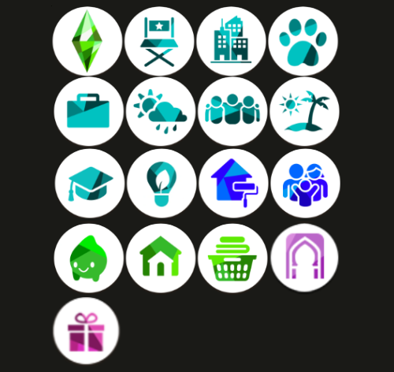

Sul sul, my name is Jenna (she/her) from South Wales, UK.
I have been playing The Sims on and off for around 20 years. Starting off with the OG Sims, progressing on to sims 2 as soon as it came out, completely skipping sims 3 (I blame A-Levels and univeristy for this) and then finding my way back to the game for sims 4. As cliché as it sounds, it really was like coming home.
I was introduced to the sims through a friend back on an early windows chunky PC and was instantly hooked. I had always loved any video games that I had been exposed to - theme hospital, doom, bubble bobble bust-a-move, Sonic and of course Mario bros to name a few, but The Sims was something entirely different. It allowed me to create my own little world and play it out in real time. I had always loved story telling and it seemed like the perfect visual representation of those.
I am naturally pretty introverted, my social battery runs out quickly at times and i enjoy my own company - and the sims was the perfect game for me. which is ironic too, because I have many friend whom I have bonded with over the game. Funny how that works, huh?
Any way, enough babbling from me - I've put the site together to introduce everyone to my sims and their stories and to share my favourite CC. Feel free to drop me a message with any recommendations for cc/challenges.
-- jenna xo
what i own:
expansion packs: get famous, city living, cats and dogs, go to work, seasons, get together, island living, university, eco lifestyle
game packs: dream home decorator, parenthood
stuff packs: paranormal, tiny living, laundry day
kits: courtyard oasis.
